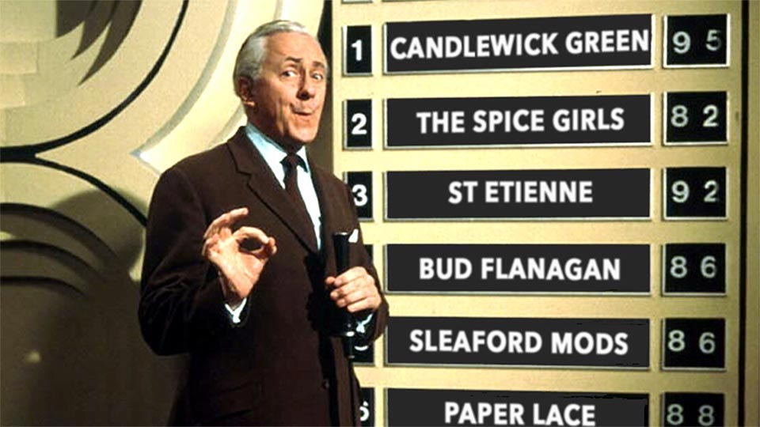
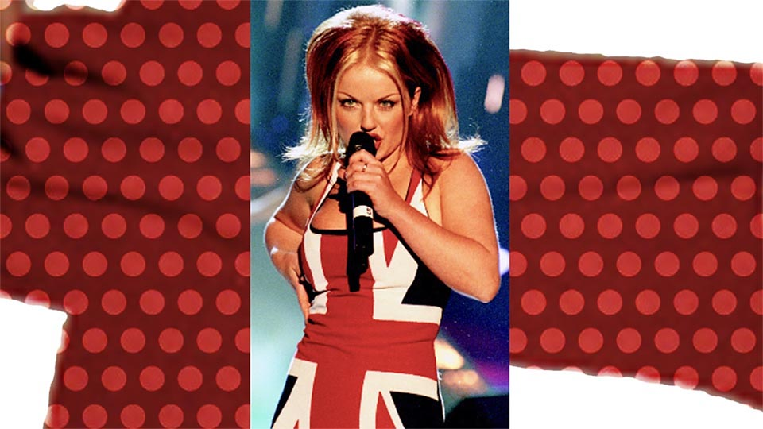
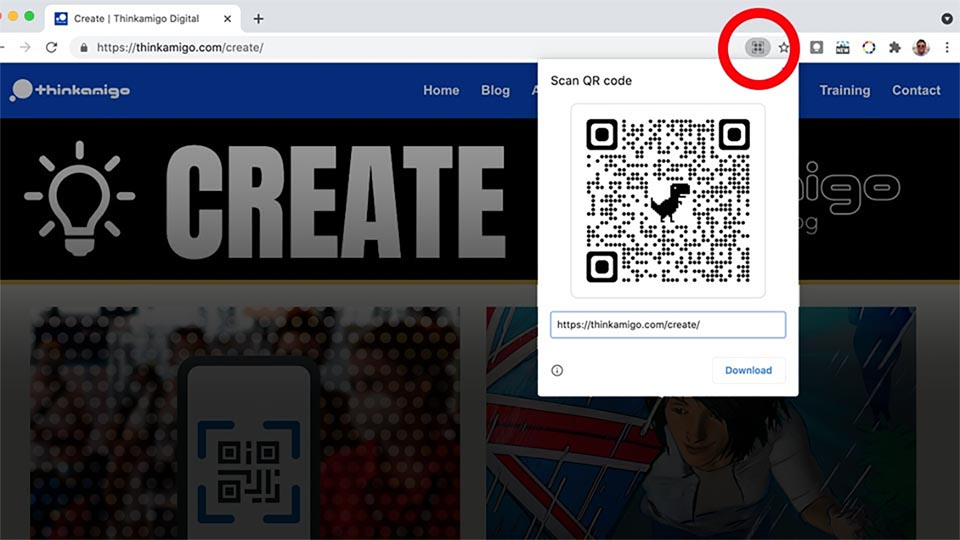

Who do you think-QR?
From BritPop to Brexit. A brief history of the Quick Response code
Paul Fillingham - originally published in 2020I have an earworm that harks back to the nineteen seventies. It’s ‘Who do you think you are?” by Candlewick Green. The song has been there for some days now. It conjures up visions of schoolboy fishing trips to Newark-on-Trent and late-night sketching sessions inspired by Marvel superhero comics; The Avengers, Spiderman, The Incredible Hulk, and my concession to DC comics The Green Lantern because I loved Gil Kane’s artwork.
I’d work late into the night, listening to the radio. National stations like Radio One were inaccessible due to interference from the village colliery, but I was able to tune into ‘Fab 208’. Radio Luxemburg (208 medium wave) had a rolling playlist of glam-rock, pop and soul. As a consequence, I acquired an eclectic taste in music and enough earworms to last a lifetime. In case you are not familiar with the concept, an earworm is a form of involuntary cognition that can lead to repetitive memory flashbacks.
It’s not much of an leap to go from ‘Who do you think you are?’ to ‘Who do you think-QR?’ a wordplay on ‘think’ and the acronym ‘QR’ or Quick Response (code) which happens to be the subject of this blog post.
I hadn’t really thought about QR-codes for a long time, but since Covid 19 they seem to be everywhere. Culture is like that, it comes in cycles and has lots of surprising random connections. The sudden reappearance of the QR-code phenomenon comes its own backing track, and was originally performed in 1974 by Opportunity Knocks talent show winners, Candlewick Green.

Culture is like that, it comes in cycles and has lots of surprising random connections.
The QR barcode format was introduced by Japanese auto-parts manufacturer Denso Wave in 1994. In the same year, British computer scientist Sir Tim Berners Lee left his cherished web server at CERN to take up his new post at MIT where he established the World Wide Web Consortium (W3C). 1994 is also the year music mogul Simon Fuller founded the Spice Girls, leading to a resurgence of teen pop leveraging slogans like 'Cool Britannia'.
1994 is also the year music entertainment mogul Simon Fuller founded the Spice Girls, leading to a resurgence of teen pop and dance, leveraging slogans like ‘Cool Britannia’ and ‘Girl Power’. Though it wasn’t until 1997 that Geri Halliwell stormed the Brit Awards ceremony in her signature union jack dress during a performance of the Spice Girls song ‘Who do you think you are?’ (Different song, but equally ‘ear-wormy’) for the 1990’s cohort (Generation Y and Z).

The music industry Brits’ Awards ceremony in 1997 offered a representation of our national flag that is very different from the one we are experiencing right now. 1997 feels like a million years ago. Google were emerging from their campus dorms into the public domain and I was designing websites and applications for Raleigh and Boots at the advertising agency Cross Hill Conwill. Some of these early websites were built in collaboration with research fellow Sean Clark. By the end of the decade, bracing ourselves for a much-hyped Y2K armageddon, we joined Headland Multimedia, creating websites for the likes of AstraZeneca (vaccines), Pace micro (Sky TV boxes), and GiroBank (HM Revenue and Customs online payments).
By 2009, QR-codes had started to appear in Sean’s own (Cuttlefish) community websites including ‘Empedia’ an experimental cultural trails authoring platform. I joined the project team as design lead shortly after it was granted funding from the Museums Libraries and Archives Council (MLA).
The Great Reappearance
One of the barriers to adoption was initial resistance by Apple to embed the technology into its iPhone Operating System (iOS); a situation remedied in 2017. At the beginning of 2020, with the world locked-down in response to the Covid-19 pandemic, contactless technologies were suddenly propelled into the mainstream.

In the first quarter of 2021, in a surprise move by Google, their QR technology is back, in the form of a Chrome plug-in, enabling web users to generate QR codes directly from any URL directly in the browser. We are so pleased to see the return of QR-codes that we're playing 'Who do you think you are?' non-stop in our studio.
Three acts have performed a version of 'Who do you think you are?' but which one would win Britain's got Talent? Candlewick Green, The Spice Girls, Sleaford Mods, or Bud Flanagan? Remember folks, it's your vote that counts...